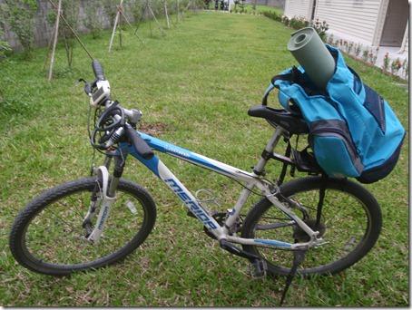

← 回部落格
【東華場】101 年自行車 C 級領隊研習會暨檢定考試
這場由國峰負責！將在東華大學校內由「台灣自行車協會」、「國立東華大學體育中心」共同主辦。為了這個活動耗費不少精力，主要是希望能藉此課程，讓更多花蓮在地人與東華大學的師生能認識自行車、了解自行車，進而提升東華大學校內的自行車文化與騎車旅遊的風氣。需要大家的支持……
歡迎對「自行車領隊」有興趣的花蓮在地朋友一起來參加。若有東華大學附近民眾想要報名者，可準備好「報名表(見下面連結)、一吋相片 3 張、身分證影本」，直接到東華大學體育中心找「莊春昇」先生即可。

【圖】跟著我四年多到處趴趴走的登山車，除了臺灣各地，也曾征戰大陸福建泰寧的越野挑戰賽……騎自行車通勤、郊遊、旅行真的很棒。歡迎想要認識自行車、喜歡自行車旅行，或喜歡帶人旅行的朋友一起來上課。
- 【報名表下載】
- 【實施計畫下載】【臺灣自行車官網公告】
- 研習日期：101 年 11 月 17 日(六)～11 月 18 日(日)
- 研習地點：國立東華大學花師教育學院大樓階梯教室(一)(C128)
- 報名費：(1)一般人士每人 2000 元。(2)學校在職教職員生每人 1600 元(須附在職或在學證明)。 含講師費、講義、午餐、戶外教學保險、證照檢定費 1000 元等。
- 戶外教學用車，主辦單位可代學員租用環島高級自行車(含安全帽)，每台 300 元整，請於報名時一併繳費。（歡迎自備自行車）
- 參加對象：(1)凡年滿 18 歲者對自行車活動有興趣者均可報名參加。(2)各級學校教職員生、大專校院學生及觀光休閒相關產業從業人士。名額 100 人為限(額滿為止)。

- 宗 旨：配合行政院體育委員會推動自行車運動完騎認證與專業人員證照制度，辦理自行車領隊研習相關課程，培訓地區性自行車觀光休閒的專業人才，推廣國內自行車觀光休閒的風氣，提升個人專業能力及就業的機會。
- 指導單位：教育部、行政院體育委員會
- 主辦單位：台灣自行車協會、國立東華大學體育中心
- 承辦單位：台灣單車學院
- 研習內容：自行車基本知識、自行車騎乘教學、自行車旅程設計、簡易維修教學、自行車領隊實務戶外教學，課程表(如附件一)。
- 報名方式：(需繳費後，完成報名手續)
- 報名資料：報名表、一吋相片 3 張、身分證影本。
- 繳費方式(1)：採用郵政匯票、ATM、匯款等。匯款戶名：台灣自行車協會；兆豐銀行大里分行(代碼 017) 241-09-084990。或匯票(台灣自行車協會)連同報名表資料(請註明匯款帳戶後 5 碼)掛號郵寄至 台灣自行車協會收
- 繳費方式(2)：東華教職員生請逕繳至體育中心，收據日後由台灣自行車協會統一開立。
- 研習與檢定：研習期間全程參與無缺課，並通過學科、術科檢定考試成績及格者(70 分為及格)，由台灣自行車協會授與自行車 C 級領隊證及研習證書。
- 其他規定：(1)研習期間請穿著運動服裝、運動鞋或自行車專業服裝以利實務教學。 (2)如有天災、氣候或不可抗拒的因素，主辦單位有權臨時修正或變更課程之權利。(3)其他未規定之事項依主辦單位公告為準。(請參閱台灣自行車協會www.twbike.org)
- 本計畫報請主管機關核定後實施，修正時亦同。
- 聯絡地址：402 台中市南區工學一街 197 巷 18 號
- 聯絡人：林耀彰老師 0988-036692
- TEL：04-2263-9990 FAX：04-2263-4311 E-mail：[twb@twbike.org](mailto:twb@twbike.org)
徐國峰・KFCS 耐力訓練系統
看更多文章 →